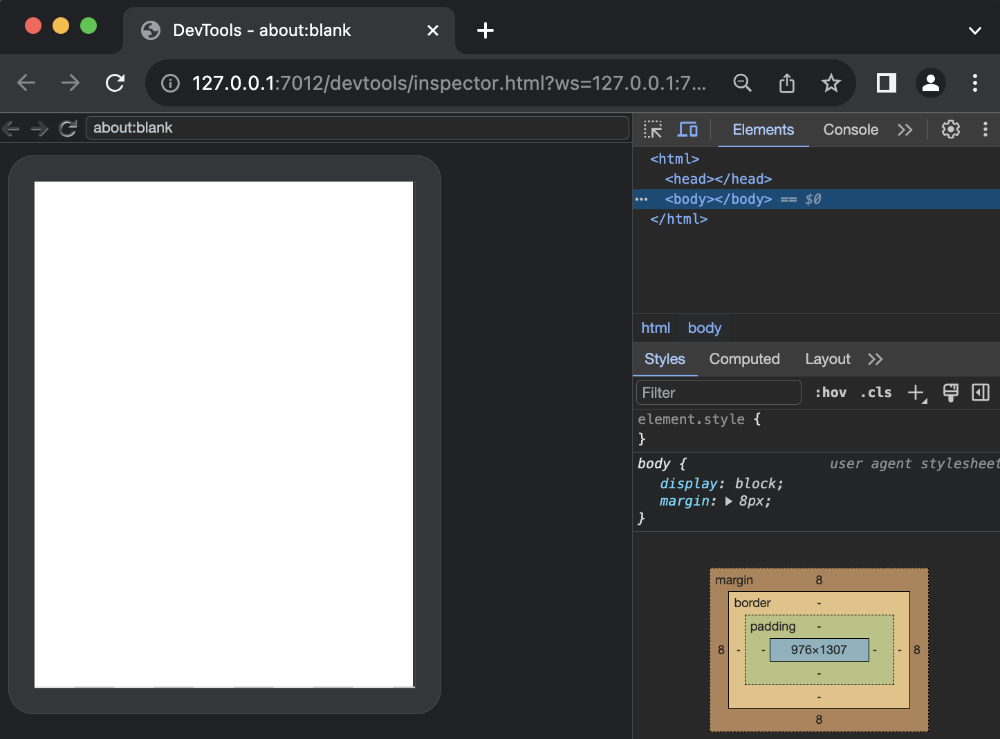

# install.packages('pak')
pak::pak('mjfrigaard/shinypak')14 System tests
Making Sure It Works
Easily launch the applications with the
install.packages('pak')
library(pak)
pak('mjfrigaard/shinypak')
TLDR 
System tests
shinytest2 streamlines and enhances system testing for Shiny applications, making it easier to ensure your app works flawlessly inside your app-package:
Use
record_test()to capture user interactions and generate tests without writing code manually.Leverage
AppDriver$new()for scripting and automating tests, making it simpler to test complex user scenarios.Apply
exportTestValues()andtest.modeto access and assess internal app states, offering a deeper testing perspective.
BDD functions
Use
describe()andit()to add features and sceanrios in test files.describe('Feature...', code = { it('Scenario...', code = { ... }) })
This chapter covers using shinytest2 and testthat to perform system tests on the features and scenarios in your app-package.
Accessing the code examples
I’ve created the shinypak R package In an effort to make each section accessible and easy to follow:
Install shinypak using pak (or remotes):
Review the chapters in each section:
library(shinypak)
list_apps(regex = 'system')
## # A tibble: 1 × 2
## branch last_updated
## <chr> <dttm>
## 1 14_tests-system 2024-02-21 12:02:02Launch an app:
launch(app = "14_tests-system")“Failure to allow enough time for system test, in particular, is peculiarly disastrous. Since the delay comes at the end of the schedule, no one is aware of schedule trouble until almost the delivery date. Bad news, late and without warning, is unsettling to customers and to managers.” - ‘The Mythical Man-Month’, Frederick P. Brooks Jr.
System (or end-to-end) tests simulate real user interactions in a ‘pre-production’ environment to verify the whole application (or system) works.1 Approaches to system testing vary, but in general, we’ll want to run a system test for each feature in our application before a release.
If we’ve been documenting our unit and integration tests with BDD feature and scenario descriptions, the system tests can be used to confirm the functional requirements for the primary execution path (or user experience) before release.
14.1 Current tests

This section’s code is in the 13_tests-modules branch of moviesApp.
The current files in our tests folder are below:
tests
├── testthat
│ ├── fixtures
│ │ ├── make-tidy_ggp2_movies.R
│ │ └── tidy_ggp2_movies.rds
│ ├── helper.R
│ ├── test-mod_scatter_display.R
│ ├── test-mod_var_input.R
│ └── test-scatter_plot.R
└── testthat.R
3 directories, 7 filesThe output from devtools::test() is below:
devtools::test()ℹ Testing moviesApp
✔ | F W S OK | Context
⠏ | 0 | mod_scatter_display
INFO [2023-10-26 10:31:02] [ START display = selected_vars initial values]
⠋ | 1 | mod_scatter_display
INFO [2023-10-26 10:31:03] [ END display = selected_vars initial values]
INFO [2023-10-26 10:31:03] [ START display = scatterplot[['alt']] = 'Plot object']
⠙ | 2 | mod_scatter_display
INFO [2023-10-26 10:31:03] [ END display = scatterplot[['alt']] = 'Plot object']
INFO [2023-10-26 10:31:03] [ START display = inputs() creates ggplot2 object]
INFO [2023-10-26 10:31:03] [ END display = inputs() creates ggplot2 object]
✔ | 3 | mod_scatter_display
⠏ | 0 | mod_var_input
INFO [2023-10-26 10:31:03] [ START input = initial inputs returned()]
⠋ | 1 | mod_var_input
INFO [2023-10-26 10:31:03] [ END input = initial inputs returned()]
✔ | 1 | mod_var_input
⠏ | 0 | scatter_plot
INFO [2023-10-26 10:31:03] [ START data 2 = fixtures/tidy_ggp2_movies.rds]
⠋ | 1 | scatter_plot
INFO [2023-10-26 10:31:03] [ END data 2 = fixtures/tidy_ggp2_movies.rds]
INFO [2023-10-26 10:31:03] [ START data 1 = data/movies.rda]
INFO [2023-10-26 10:31:03] [ END data 1 = data/movies.rda]
✔ | 2 | scatter_plot
══ Results ═════════════════════════════════════════════════════════════════════
Duration: 1.4 s
[ FAIL 0 | WARN 0 | SKIP 0 | PASS 6 ]14.1.1 shinytest2
shinytest2 requires a few steps to get up and running (most notably the chromote package), but you’ll find excellent documentation on the package website.2
The shinytest2::use_shinytest2() performs the following setup steps:
✔ Adding
shinytest2::load_app_env()totests/testthat/setup-shinytest2.R✔ Adding
*_.new.pngto.gitignore✔ Adding
_\\.new\\.png$to.Rbuildignore✔ Adding
shinytest2toSuggestsfield inDESCRIPTION
We also get some advice on using shinytest2 functions in our code:
• In your package code, use `rlang::is_installed("shinytest2")` or
`rlang::check_installed("shinytest2")` to test if shinytest2 is installed
• Then directly refer to functions with `shinytest2::fun()`After setting up shinytest2, be sure you can create a new chromote session like the one below:
library(chromote)
b <- ChromoteSession$new()
b$view()

Chromote session
14.2 Record a test
If we launch the test recorder with shinytest2::record_test(), change the inputs in our application, click on Expect Shiny values and Save test and exit, a test is recorded to a new test file: tests/testthat/test-shinytest2.R

shinytest2::record_test()
The test runs and saves the PNG snapshot and test values to the tests/testthat/_snaps/ folder:
[ FAIL 0 | WARN 2 | SKIP 0 | PASS 1 ]
── Warning (test-shinytest2.R:11:3): {shinytest2} recording: feature-01 ──
Adding new file snapshot: 'tests/testthat/_snaps/feature-01-001_.png'
── Warning (test-shinytest2.R:11:3): {shinytest2} recording: feature-01 ──
Adding new file snapshot: 'tests/testthat/_snaps/feature-01-001.json'
[ FAIL 0 | WARN 2 | SKIP 0 | PASS 1 ]
loadSupport warning with shinytest2
After setting up shinytest2, the tests/testthat/setup-shinytest2.R file contains a call to shinytest2::load_app_env(). This runs automatically with shinytest2 tests and produces a familiar warning:
Warning message:
In shiny::loadSupport(app_dir, renv = renv, globalrenv = globalrenv) :
Loading R/ subdirectory for Shiny application, but this directory appears
to contain an R package. Sourcing files in R/ may cause unexpected behavior.We covered this warning message in the Launch chapter, and it’s being addressed in a future release of shinytest2
The contents of the new test-shinytest2.R test file are below:
library(shinytest2)
test_that("{shinytest2} recording: feature-01", {
app <- AppDriver$new(name = "feature-01",
height = 800, width = 1173)
app$set_inputs(`vars-y` = "imdb_num_votes")
app$set_inputs(`vars-x` = "critics_score")
app$set_inputs(`vars-z` = "genre")
app$set_inputs(`vars-alpha` = 0.7)
app$set_inputs(`vars-size` = 3)
app$set_inputs(`vars-plot_title` = "New plot title")
app$expect_values()
})As we can see, each action in the test recorder has a corresponding call in the test:
- Initialize the
AppDriver$new()with the name of the test and the dimensions of the Chromium browser.
- Change the y axis (
vars-y) to ‘IMBD number of votes’ (imdb_num_votes)
- Change the x axis (
vars-x) to ‘Critics Score’ (critics_score)
- Change the color by (
vars-z) to ‘Genre’ (genre)
- Change the point opacity (
vars-alpha) to ‘0.7’
- Change the point size (
vars-alpha) to ‘3’
- Change the plot title to (
vars-plot_title) to ‘New plot title’
We’ll use this initial test as a template for writing the steps in our test Scenarios.
14.2.1 BDD test terminology
There are multiple ways to approach your test layout with testthat’s describe(), it() and/or test_that() functions. Below is an example with dedicated Feature and Scenario descriptions, a reference to the feature number in the it() (or test_that()) call:
describe("Feature 1: Scatter plot data visualization dropdowns
As a film data analyst
I want to explore variables in the movie review data
So that I can analyze relationships between movie reivew sources", {
describe("Scenario: Change dropdown values for plotting
Given the movie review application is loaded
When I choose the variable [ ] for the x-axis
And I choose the variable [ ] for the y-axis
And I choose the variable [ ] for the color
And I choose the size of the points to be [ ]
And I choose the opacity of the points to be [ ]
And I enter '[ ]' for the plot title
Then the scatter plot should show [ ] on the x-axis
And the scatter plot should show [ ] on the y-axis
And the points on the scatter plot should be colored by [ ]
And the size of the points on the scatter plot should be [ ]
And the opacity of the points on the scatter plot should be [ ]
And the title of the plot should be '[ ]'", {
it("Feature 01", {
app <- AppDriver$new(name = "feature-01",
height = 800, width = 1173)
app$set_inputs(`vars-y` = "imdb_num_votes")
app$set_inputs(`vars-x` = "critics_score")
app$set_inputs(`vars-z` = "genre")
app$set_inputs(`vars-alpha` = 0.7)
app$set_inputs(`vars-size` = 3)
app$set_inputs(`vars-plot_title` = "New plot title")
app$expect_values()
})
})
})With this approach you can create the test file as soon as you have a Feature description (and come back later to fill in the Scenarios and tests).
An alternative approach is to use nested describe() functions and include each of the Scenario’s Then steps in the it() or test_that() call (these are what will actually be tested):
library(shinytest2)
describe("Feature 1: Scatter plot data visualization dropdowns
As a film data analyst
I want to explore variables in the movie review data
So that I can analyze relationships between movie reivew sources", {
describe("Scenario A: Change dropdown values for plotting
Given the movie review application is loaded
When I choose the variable [ ] for the x-axis
And I choose the variable [ ] for the y-axis
And I choose the variable [ ] for the color", {
it("Then the scatter plot should show [ ] on the x-axis
And the scatter plot should show [ ] on the y-axis
And the points on the scatter plot should be colored by [ ]", {
app <- AppDriver$new(name = "feature-01-senario-a",
height = 800, width = 1173)
app$set_inputs(`vars-y` = "imdb_num_votes")
app$set_inputs(`vars-x` = "critics_score")
app$set_inputs(`vars-z` = "genre")
app$expect_values()
})
})
describe("Scenario B: Change dropdown values for plotting
Given the movie review application is loaded
When I choose the size of the points to be [ ]
And I choose the opacity of the points to be [ ]
And I enter '[ ]' for the plot title", {
it("Then the size of the points on the scatter plot should be [ ]
And the opacity of the points on the scatter plot should be [ ]
And the title of the plot should be '[ ]'", {
app <- AppDriver$new(name = "feature-01-senario-b",
height = 800, width = 1173)
app$set_inputs(`vars-alpha` = 0.7)
app$set_inputs(`vars-size` = 3)
app$set_inputs(`vars-plot_title` = "New plot title")
app$expect_values()
})
})
})An important not on this approach is the different names for each AppDriver$new() (otherwise we’d be overwriting the previous snapshot/values).
14.2.2 Testing apps in inst/
If we want to test a feature for one of the alternative applications in moviesApp, we can pass their location to the app_dir argument of AppDriver$new(). In the test below, the scenario describes changing inputs for x, y, and color, and removing the missing values from the graph:
library(shinytest2)
describe(
"Feature 1: Scatter plot data visualization dropdowns
As a film data analyst
I want to explore movie review variables from IMDB (ggplot2movies::movies data)
So that I can analyze relationships between movie attributes and ratings", {
describe(
"Scenario: Change dropdown values for plotting
Given the movie review application is loaded
When I choose the variable ['Length'] for the x-axis
And I choose the variable ['Rating'] for the y-axis
And I choose the variable ['Genre'] for the color
And I click the ['Remove missing'] checkbox", code = {
it("Then the scatter plot should show ['Length'] on the x-axis
And the scatter plot should show ['Rating'] on the y-axis
And the points on the scatter plot should be colored by ['Genre']
And the missing values should be removed from the plot", {
test_logger(start = 'ggp2movies-feat-01', msg = "update x, y, z, missing")
app <- AppDriver$new(app_dir = system.file("dev", package = "moviesApp"),
name = "ggp2movies_app-feature-01",
wait = FALSE, timeout = 30000,
height = 800, width = 1173)
app$set_inputs(`vars-y` = "length")
app$set_inputs(`vars-x` = "rating")
app$set_inputs(`vars-z` = "genre")
app$set_inputs(`plot-missing` = TRUE)
app$expect_values()
test_logger(end = 'ggp2movies-feat-01', msg = "update x, y, z, missing")
})
})
})Not that I’ve changed the wait and timeout arguments in AppDriver$new() because this tests takes over 10 seconds to complete (which I can see with my test_logger() output):
[ FAIL 0 | WARN 0 | SKIP 0 | PASS 0 ]
INFO [2023-10-26 12:58:57] [ START ggp2movies-feat-01 = update x, y, z, missing]
[ FAIL 0 | WARN 2 | SKIP 0 | PASS 1 ]
INFO [2023-10-26 12:59:09] [ END ggp2movies-feat-01 = update x, y, z, missing]When I confirm this in the output png file, I can see the x, y, and color values have been changed (and the missing values have been removed).

tests/testthat/_snaps/ggp2movies_app-feature-01-001_.png'
14.3 test.mode
If you recall, we’ve included an argument in both of our standalone app functions to allow for options to be passed to shinyApp().
movies_app(options = list())If we’re testing our application, we can include the test.mode = TRUE option, which will return any values passed to exportTestValues():
movies_app(options = list(test.mode = TRUE), run = 'p')We can also include this in our .Rprofile as:3
options(shiny.testmode = TRUE)To export values, place the name of exported reactive values in curly brackets ({}). Below is an example using the inputs() reactive object in the mod_scatter_display_server():
exportTestValues(
x = { inputs()$x },
y = { inputs()$y },
z = { inputs()$z },
alpha = { inputs()$alpha },
size = { inputs()$size },
title = { inputs()$plot_title }
)In our test, we can create the AppDriver$new() object, extract the values with get_values(), then write tests against any of the exported values:
app <- AppDriver$new(name = "test-values",
height = 800, width = 1173,
wait = FALSE, timeout = 300000)
test_values <- app$get_values()
test_values[['export']]$`plot-alpha`
[1] 0.5
$`plot-size`
[1] 2
$`plot-title`
[1] ""
$`plot-x`
[1] "imdb_rating"
$`plot-y`
[1] "audience_score"
$`plot-z`
[1] "mpaa_rating"Launch app with the shinypak package:
launch('14_tests-system')Recap
Behavior-driven development (or behavior-driven testing) fills the void between non-technical stakeholders and developers by encouraging natural, descriptive language (often complete sentences) to define and communicate the application requirements.
Capturing the application’s desired behaviors in Features (As a , I want, So that) and Scenarios (Given, When, Then) provides a testing script that’s clear and easy to follow. Using the BDD format also makes system tests easier to update if the features and scenarios change.
Recap
System tests
record_test()simplifies the creation of system tests by recording interactions with your Shiny app.- Using
record_test()accelerates test creation and ensures our tests accurately reflect user behavior, making it easier to catch issues that could affect user experience.
- Using
- Use
AppDriver$new()to manually create tests for more control and customization.- Scripting tests with
shinytest2allows for detailed user interactions and testing specific functionalities in isolation or under unique conditions, offering a granular approach to system testing.
- Scripting tests with
- Use
exportTestValues()in tandem withtest.modeto expose and verify the internal state of a Shiny app during tests.- This technique is crucial for testing the logic and data behind your app’s UI, ensuring that the app looks right and operates correctly under various scenarios.
BDD functions
Using
testthat’s BDD functions makes system tests easier to update if the features and scenarios change.- Capturing the application’s desired behaviors in
Features(As a , I want, So that) andScenarios(Given, When, Then) provides a testing script that’s clear and easy to follow.
- Capturing the application’s desired behaviors in
use
describe()andit()to add features and sceanrios in test files.describe('Feature...', code = { it('Scenario...', code = { ... }) })
System tests should strive to replicate the production conditions, even when/if it’s not possible to perfectly replicate the environment.↩︎
A great place to start is the Getting Started vignette.↩︎
We covered the
.Rprofilein Section 4.4.3.↩︎